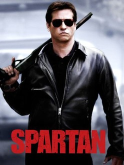
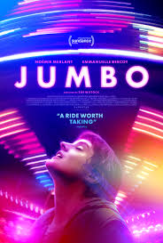
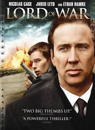

SPARTAN (2004)
Action Crime Mystery Thriller
JUMBO (2020)
Drama
NOSFERATU (2024)

Fantasy Horror Mystery
LORD OF WAR (2005)
Drama Crime Thriller

Series of still photographs on film projected onto a screen using light in rapid succession
Action Crime Mystery Thriller
Drama
Fantasy Horror Mystery
Drama Crime Thriller